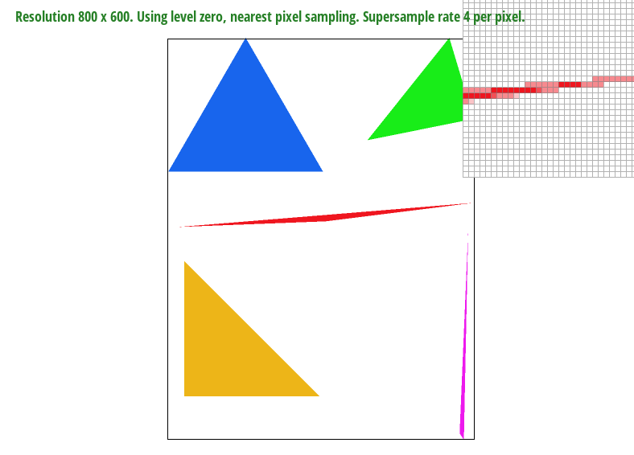
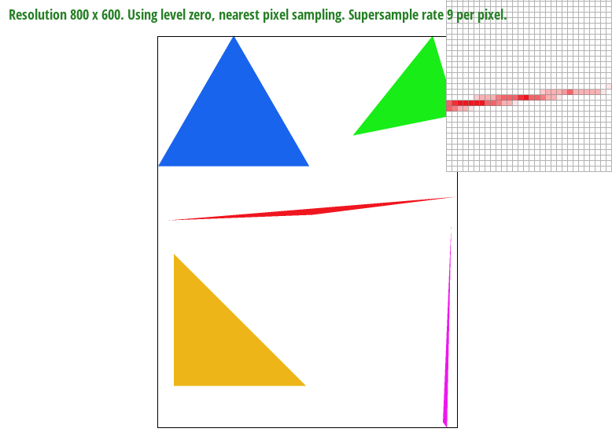

CS184/284A Spring 2025 Homework 1 Write-Up
Names:
Link to webpage: https://cal-cs184-student.github.io/hw-webpages-blahblahbl/
Link to GitHub repository: https://github.com/cal-cs184-student/sp25-hw1-joosy
Overview
Give a high-level overview of what you implemented in this homework. Think about what you've built as a whole. Share your thoughts on what interesting things you've learned from completing the homework.Task 1: Drawing Single-Color Triangles
To rasterize triangles I basically followed the three line test from lecture. I first found the bounding box by finding the smallest and largest x and y, because everything outside of that won't be in the triangle. I then made sure it was in ccw order because otherwise the algorithm doesn't work. I found online that if you calculate the signed area and it's less than 0, it's cw. S So if it's that I just switched coord 2 and 3 to make it ccw. Finally I just followed the algorithm from class, iterating through the bounded box and used the inside line test on all three triangle vectors and the point to see if it was inside.My algorithm just checks every pixel in the bounding box so it is not worse than one that checks every pixel.
Task 2: Antialiasing by Supersampling
What I did was basically as the question suggested I sampled it into a larger sample_buffer. Then from this sample_buffer I averaged out the colors to get a new color which was then rendered in the frame buffer. I modified the sample_buffer to account for this by multiplying the size by the sample_rate. Basically for every pixel, for the sample_rate I just sampled that many points from the pixel and kind of like a higher resolution photo put it into the corresponding square. I calculated the sampling points using an equation which I believe matches the points from the lecture. Super sampling works to antialias because for example the image from the last problem, instead of just having no color in the middle, by sampling more points it's able to more accurately assess what's inside the triangle and the color will be lighter but connected which results in a higher quality image.

|

|
|

|
|
These results are observed because in the corners, very little of the pixel is within the triangle. The more you sample, the more likely you are to capture the tiny part of it within the triangle which leads to more color instead of no color. For example if only the bottom right quadrant is in the triangle, a 1 pixel sampling in the middlew won't catch it, but the 4, 9, and 16 will which result in color and less jaggies.
Task 3: Transforms
Task 4: Barycentric coordinates
Barycentric Coordinates is basically a way to represent coordinates inside (or outside) a triangle based on some weights of the vertices. Each vertex has a certain percentage that it contributes to the point which makes it useful for interpolation because you can just assign values to the vertices and interpolate from there. For example in the triangle below, each of the vertices has a color (red, green, purple). Each point in the triangle can be thought of as a weighted average of those colors. The closer is it to a point the more weighted it is to that color (why the parts near the vertices are pretty much the color).Task 5: "Pixel sampling" for texture mapping
Pixel sampling is basically finding the color of a pixel in an image by taking from a texture. The issue is that sometimes the texture doesn't align exactly with an object (common in 3d stuff), so we have to do some interlopating of sorts. The two pixel sampling methods so far are nearest - in which the nearest texture pixel color is used for the pixel, and bilinear - in which the four nearest pixels are averaged to find the color. To implement this, I used barycentric coordinates, which are weighted averages. I calculated the barycentric coordinates and multiplied by the corner u, v (texture coordinates) to get the corresponding texture coordinate for the point we need. Then I used that texture coordinate to sample the texture, which I then used to set the pixel color depending on which psm was used.|
|
|
|
|
|
The difference is that there is more "in between" colors in the bilinear sampling which creates a smoother image. It is noticable in the 1 pixel sampling for example in the bottom the border line is more filled ni. You don't really notice a difference in 16 pixel. The reason for this is because bilinear and supersampling are both ways to antialiase so when you supersample at 16 pixel, it already serves to "reduce" most of the high frequencies so when you then bilinear the work is already done so there is little to no difference. On the other hand when you do one pixel sampling, there may still be high frequencies (big differences in colors), which bilinear sampling serves to reduce and smooth out which is why its more noticable.
Task 6: "Level Sampling" with mipmaps for texture mapping
Levels sampling is similar to pixel sampling but with mip map levels. Basically textures are reduced to half size over and over to represent further and further levels. These are determined by jacobians which basically determine how "fast" the pixels are changing which results in levels. This serves to create a more smoother image because lower quality textures are sampled for 'further' parts. For levels I basically calculated these using barycentric coordinates on x+1 and y+1 and used the vertice u, v values to calculate the u, v values and the jacobians respectively. Then I basically followed the formula from lecture. For linear level, I basically used the two mipmap levels closest (since it's usually a float by the formula), and then used interpolating to find a color for the pixel.supersampling has high time intensity and memory intensity because you're basically sampling the pixels * the ratio. For example if you do 9x super sampling you're basically doing the same work as sampling the image at 9 times the size which is slow for large images as well as storing the larger image is memory intensive too. this should have the highest antialiasing power if you run with enough samples though because with more samples basically just copying the texture exactly.
level sampling is also pretty memory intensive but less than supersampling because you need to store map levels for the texture (which half over and over) which can be a lot of memory. this is in the middle of antialiasing because it isn't as effective as supersampling but still effective and faster.
point sampling is kind of in between the two. memory wise it's the lowest beacuse you don't need to store extra details. time wise it's about the same as level sampling because it's just running pulling nearby pixels to do math calcaultions and faster than supersampling. effectiveness wise bilinear is decently effective but not as effective as supersampling and level because distant textures can still have aliasing. bilinear without level sampling can also cause blur.
|
|
|
|
|
|